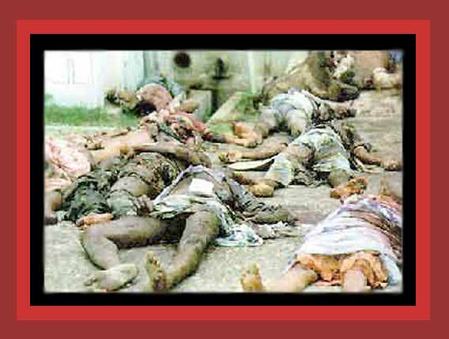

| Sri Lanka has been waging a war on secessionist Tamils for decades, murdering thousands, many by indiscriminant bombing. Here are some of the 65 Tamil refugee dead that were packed in a church bombed by the Sri Lankan air force in July 1995. The church was bombed after the air force dropped leaflets warning civilians to seek refuge in temples and churches to minimize the chance of death or injury from air strikes. Source: "Genocide of Tamils in Sri Lanka". |